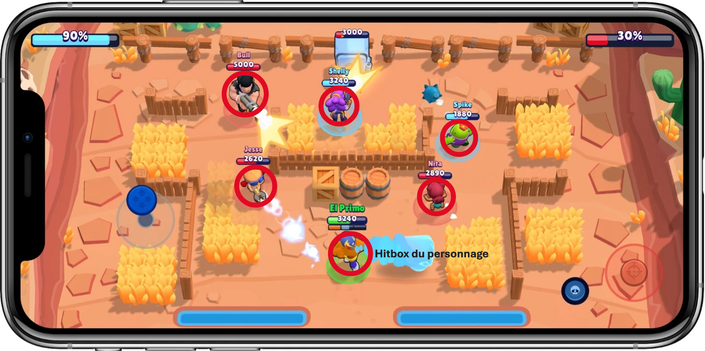

2. Introduction à Pygame¶
Nous avons vu plusieurs types de base en Python (int pour les entiers, float pour les nombres à virgules, str pour les textes, etc.). La notion de classe va en quelque sorte nous permettre de généraliser la notion de « type » afin de créer de nouvelles structures de données.
Une classe définit des attributs et des méthodes. Par exemple, imaginons une classe Voiture qui servira à créer des objets qui sont des voitures. Cette classe va pouvoir définir un attribut couleur, un attribut vitesse, etc. Ces attributs correspondent à des propriétés qui peuvent exister pour une voiture. La classe Voiture pourra également définir une méthode rouler(). Une méthode correspond en quelque sorte à une action, ici l’action de rouler peut être réalisée pour une voiture.

Si on imagine une classe Avion, elle pourra définir une méthode voler(). Elle pourra aussi définir une méthode rouler(). Par contre, la classe Voiture n’aura pas de méthode voler() car une voiture ne peut pas voler. De même, la classe Avion pourra avoir un attribut altitude mais ce ne sera pas le cas pour la classe Voiture.
Après avoir présenté la notion de classe, nous allons voir la notion d’objet. Si on revient à la classe Voiture, nous pourrons avoir plusieurs voitures qui seront chacune des objets bien distincts. Par exemple, la voiture de Jonathan, qui est de couleur rouge avec une vitesse de 30 km/h, est un objet de la classe Voiture. De même, la voiture de Denis, qui est de couleur grise avec une vitesse de 50 km/h, est un autre objet. Nous pouvons donc avoir plusieurs objects pour une même classe, en particulier ici deux objets. Chacun des objets a des valeurs qui lui sont propres pour les attributs.
(Pour plus de détails théoriques sur la programmation orientée objet, vous pouvez consulter cette page dont le cours est tiré.)
Création d’une classe pour Brawlers¶
Nous allons créer une classe Brawler pour représenter les personnages du jeu Brawl Stars. Chaque brawler aura des attributs comme la vie, la position, l’attaque, la vitesse, etc.
class Brawler:
def __init__(self):
self.vie = 3990
self.x = 50
self.y = 150
self.degats = 100
self.vitesse = 10
brawler1 = Brawler()
print(brawler1.vie) # Affiche 3990
print(brawler1.degats) # Affiche 100
Note
Le mot-clé self est utilisé pour faire référence à l’objet lui-même au sein de la classe.
Le mot-clé self ne s’utilise jamais en dehors d’une classe.
Exercice 1¶
Créez une classe Rico qui représente le brawler Rico. Ajoutez tous les attributs que vous pensez nécessaires (au minimum: vie, degats, x et y). Créez un objet rico de la classe Rico et affichez ses attributs.
Voici la fiche de son personnage :
Note
Pour les coordonnées x et y, vous pouvez choisir des valeurs aléatoires.
Exercice 2¶
Il n’est pas pratique de devoir créer une classe différente pour chaque brawler. Il vaudrait mieux créer une seule classe permettant de créer n’importe quel brawler.
Voici un exemple de code créant une classe Point permettant de générer des points en 2D en passant les coordonnées en paramètres du constructeur (méthode init) :
class Point:
def __init__(self, x, y):
self.x = x
self.y = y
p1 = Point(2, 3)
p2 = Point(5, 7)
p3 = Point(0, 0)
Créez une classe Brawler générique qui permet de créer n’importe quel brawler. L’idée est de passer les attributs en paramètres du constructeur (méthode init).
Créez ensuite les objets rico et angelo de la classe Brawler avec les attributs correspondant à leur fiche de personnage.
Exercice 3¶
En plus des attributs, une classe peut aussi définir des méthodes. Ce sont des fonctions qui sont définies à l’intérieur de la classe et elles représentent des actions que l’objet peut effectuer.
Par exemple, un brawler peut attaquer un autre brawler, se déplacer, etc.
Voici un exemple pour la classe Point qui définit une méthode calcule_distance permettant de calculer la distance avec un autre point :
class Point:
def __init__(self, x, y):
self.x = x
self.y = y
def calcule_distance(self, p):
# self fait référence à l'objet lui-même
# p est un autre point dont on veut calculer la distance
return ((self.x - p.x)**2 + (self.y - p.y)**2) ** 0.5
def affiche_coordonnees(self):
# Simple méthode permettant d'afficher les coordonnées x et y du point
print(self.x, self.y)
p1 = Point(2, 3)
p2 = Point(5, 7)
print(p1.calcule_distance(p2)) # Affiche 5.0
p1.affiche_coordonnees() # Affiche 2 3
Ajoutez une méthode attaque à la classe Brawler qui prend en paramètre un autre brawler et qui diminue la vie de ce brawler en fonction des dégats du brawler attaquant.
Testez cette méthode en faisant attaquer rico par angelo, puis affichez la vie restante de rico.
Exercice 4¶
Ajoutez une méthode deplace à la classe Brawler qui prend en paramètre une distance dx et qui déplace le brawler sur l’axe x en conséquence.
Testez cette méthode en déplaçant rico à droite d’une distance de 15, puis en affichant ses nouvelles coordonnées.
Exercice 5¶
Ajoutez une méthode est_mort à la classe Brawler qui retourne True si le brawler est mort (vie <= 0) et False sinon. La méthode ne prend aucun paramètre (à part self).
Testez cette méthode en faisant attaquer rico par angelo jusqu’à ce que rico soit mort.
Utilisation de listes¶
Quand on possède beaucoup de personnages dans un jeu, il est plus pratique de les stocker dans une liste. Voici un exemple de code qui crée une liste de brawlers :
brawlers = [] # Crée une liste vide
for i in range(5): # Boucle pour créer 5 brawlers
brawler = Brawler(...) # Crée un brawler avec des attributs spécifiques
brawlers.append(brawler) # Ajoute un brawler à la liste
Exercice 6¶
Dans les jeux, on représente souvent les personnages par des cercles ou des rectangles pour gérer les collisions.
Voici le code d’une classe Cercle qui permet de créer des cercles en 2D :
class Cercle:
def __init__(self, x, y, rayon):
self.x = x
self.y = y
self.rayon = rayon
def calcule_distance(self, c):
# calcule la distance entre le centre du cercle et un autre cercle c
return ((self.x - c.x)**2 + (self.y - c.y)**2) ** 0.5
Ecrivez le code permettant de générer 100 cercles aléatoires et de les stocker dans une liste cercles.
La position x et y de chaque cercle doit être un nombre aléatoire entre 0 et 1000. Le rayon doit être un nombre aléatoire entre 10 et 50.
Exercice 7¶
Ajoutez une méthode est_en_collision à la classe Cercle qui prend en paramètre un autre cercle et qui retourne True si les deux cercles sont en collision et False sinon.
Indice
Deux cercles sont en collision si la distance entre leur centre est inférieure à la somme de leur rayon.
Cette distance peut être calculée avec la méthode calcule_distance qui est donnée.
Exercice 8¶
Testez la méthode est_en_collision en affichant toutes les paires de cercles en collision dans la liste cercles.
Indice
Utilisez une double boucle for pour parcourir toutes les paires de cercles.
Pour rappel, on peut parcourir une fois la liste de cercles avec for cercle in cercles:.
Votre code ressemblera donc à ceci :
# Ce code vient à la suite de la création des cercles
for c1 in cercles:
for c2 in cercles:
# Test de collision entre c1 et c2
La suite¶
Si vous êtes arrivé jusqu’ici, vous avez déjà une bonne compréhension de la programmation orientée objet.
Pour la suite, vous pouvez vous rendre sur cette page pour voir les bases de Pygame Zero, la librairie que nous allons utiliser dès la prochaine séance. Appelez-moi pour vous aider à mettre en place la librairie.